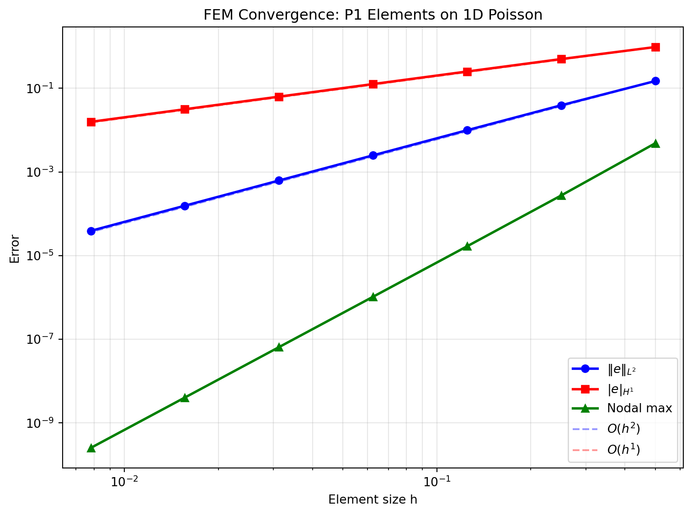
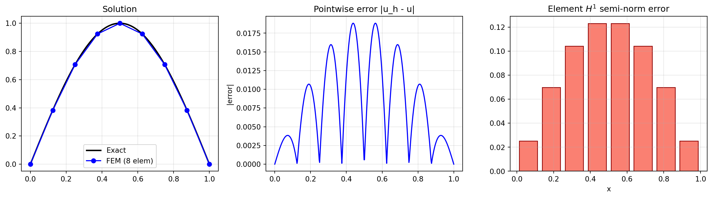
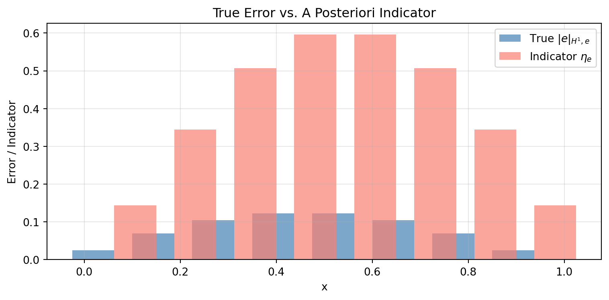

import sys, os
sys.path.insert(0, os.path.join(os.pardir, 'src'))
import sympy as sp
import numpy as np
import matplotlib.pyplot as plt
from IPython.display import Math, display, Markdown
from symbolic_fem_workbench import (
build_bar_1d_local_problem,
assemble_dense_matrix, assemble_dense_vector,
apply_dirichlet_by_reduction, expand_reduced_solution,
)15 Error Analysis and Convergence in FEM
This notebook explores FEM error behaviour through numerical experiments. We solve a 1D Poisson problem with a known exact solution, measure the error in different norms, and verify the theoretical convergence rates.
Learning objectives:
- Measure \(L^2\) and \(H^1\) (energy) errors against an exact solution.
- Verify the theoretical convergence rates: \(\|e\|_{L^2} = O(h^2)\) and \(\|e\|_{H^1} = O(h)\) for linear elements.
- Understand superconvergence at nodes.
- Observe the effect of mesh refinement on solution quality.
- Introduce a posteriori error estimation via the element residual.
15.1 1. Model Problem with Known Exact Solution
We solve \(-u''(x) = f(x)\) on \([0, 1]\) with \(u(0) = 0\), \(u(1) = 0\).
Choose \(u_{\text{exact}}(x) = \sin(\pi x)\), which gives \(f(x) = \pi^2 \sin(\pi x)\).
This is a manufactured solution approach: we pick the answer first and derive the source term.
def u_exact(x):
"""Exact solution."""
return np.sin(np.pi * x)
def du_exact(x):
"""Exact derivative."""
return np.pi * np.cos(np.pi * x)
def f_source(x):
"""Source term: -u'' = pi^2 sin(pi x)."""
return np.pi**2 * np.sin(np.pi * x)15.2 2. FEM Solver for Varying Mesh Sizes
We solve the problem on uniform meshes with \(n = 2, 4, 8, 16, 32, 64\) elements and measure the error in each case.
def solve_poisson_1d(n_elem):
"""Solve -u'' = f on [0,1] with u(0)=u(1)=0 using n_elem linear elements.
Returns: x_nodes, u_fem (nodal solution)
"""
L_total = 1.0
h = L_total / n_elem
n_nodes = n_elem + 1
x_nodes = np.linspace(0, L_total, n_nodes)
# Element stiffness and load from the workbench (specialised numerically)
# Ke = (1/h) * [[1, -1], [-1, 1]] for EA=1
Ke = (1.0/h) * np.array([[1, -1], [-1, 1]], dtype=float)
# Load vector via 2-point Gauss quadrature on each element
K_global = np.zeros((n_nodes, n_nodes))
F_global = np.zeros(n_nodes)
for e in range(n_elem):
conn = [e, e+1]
x0, x1 = x_nodes[e], x_nodes[e+1]
# Assemble stiffness
assemble_dense_matrix(K_global, Ke, conn)
# Load vector: 2-point Gauss on [x0, x1]
# Gauss points in [-1,1]: +/- 1/sqrt(3)
gp = 1.0 / np.sqrt(3)
for xi_g, w_g in [(-gp, 1.0), (gp, 1.0)]:
x_g = 0.5*(x0 + x1) + 0.5*h*xi_g # map to physical
N1 = 0.5*(1 - xi_g)
N2 = 0.5*(1 + xi_g)
f_val = f_source(x_g)
F_global[conn[0]] += w_g * N1 * f_val * (h/2)
F_global[conn[1]] += w_g * N2 * f_val * (h/2)
# Apply Dirichlet BCs: u(0)=0, u(n_nodes-1)=0
bc_dofs = [0, n_nodes-1]
bc_vals = [0.0, 0.0]
K_ff, F_f, free_dofs = apply_dirichlet_by_reduction(
K_global, F_global, bc_dofs, bc_vals
)
u_free = np.linalg.solve(K_ff, F_f)
u_fem = expand_reduced_solution(u_free, n_nodes, free_dofs, bc_dofs, bc_vals)
return x_nodes, u_fem
# Quick test
x_test, u_test = solve_poisson_1d(8)
print(f"Max nodal error with 8 elements: {np.max(np.abs(u_test - u_exact(x_test))):.6e}")Max nodal error with 8 elements: 1.665047e-0515.3 3. Computing Error Norms
We measure errors in three norms:
- Nodal max error (pointwise): \(\max_i |u^h(x_i) - u(x_i)|\)
- \(L^2\) error: \(\|e\|_{L^2} = \left( \int_0^1 (u^h - u)^2 \, dx \right)^{1/2}\)
- \(H^1\) semi-norm error (energy norm): \(|e|_{H^1} = \left( \int_0^1 (u^{h\prime} - u')^2 \, dx \right)^{1/2}\)
Theory predicts for P1 elements and smooth \(u\):
- \(\|e\|_{L^2} \leq C_1 h^2 |u|_{H^2}\)
- \(|e|_{H^1} \leq C_2 h |u|_{H^2}\)
def compute_errors(x_nodes, u_fem):
"""Compute L2 and H1 errors using 3-point Gauss quadrature per element."""
n_elem = len(x_nodes) - 1
L2_sq = 0.0
H1_sq = 0.0
# 3-point Gauss on [-1,1]
gp3 = np.array([-np.sqrt(3/5), 0.0, np.sqrt(3/5)])
gw3 = np.array([5/9, 8/9, 5/9])
for e in range(n_elem):
x0, x1 = x_nodes[e], x_nodes[e+1]
h = x1 - x0
u0, u1 = u_fem[e], u_fem[e+1]
for xi_g, w_g in zip(gp3, gw3):
# Physical coordinate
x_g = 0.5*(x0 + x1) + 0.5*h*xi_g
# FEM interpolation at Gauss point
N1 = 0.5*(1 - xi_g)
N2 = 0.5*(1 + xi_g)
uh = N1*u0 + N2*u1
# FEM derivative (constant per element)
duh = (u1 - u0) / h
# Errors
L2_sq += w_g * (uh - u_exact(x_g))**2 * (h/2)
H1_sq += w_g * (duh - du_exact(x_g))**2 * (h/2)
return np.sqrt(L2_sq), np.sqrt(H1_sq)
# ---- Convergence study ----
n_elems = [2, 4, 8, 16, 32, 64, 128]
h_vals = [1.0/n for n in n_elems]
L2_errors = []
H1_errors = []
nodal_errors = []
for n in n_elems:
x_n, u_n = solve_poisson_1d(n)
e_L2, e_H1 = compute_errors(x_n, u_n)
e_nodal = np.max(np.abs(u_n - u_exact(x_n)))
L2_errors.append(e_L2)
H1_errors.append(e_H1)
nodal_errors.append(e_nodal)
L2_errors = np.array(L2_errors)
H1_errors = np.array(H1_errors)
nodal_errors = np.array(nodal_errors)
h_vals = np.array(h_vals)
# Print table
print(f"{'n_elem':>8} {'h':>10} {'L2 error':>12} {'H1 error':>12} {'nodal max':>12}")
print('-' * 56)
for i, n in enumerate(n_elems):
print(f"{n:>8d} {h_vals[i]:>10.4f} {L2_errors[i]:>12.4e} {H1_errors[i]:>12.4e} {nodal_errors[i]:>12.4e}") n_elem h L2 error H1 error nodal max
--------------------------------------------------------
2 0.5000 1.4869e-01 9.6687e-01 4.8349e-03
4 0.2500 3.9127e-02 4.9851e-01 2.7307e-04
8 0.1250 9.9108e-03 2.5118e-01 1.6650e-05
16 0.0625 2.4859e-03 1.2583e-01 1.0343e-06
32 0.0312 6.2198e-04 6.2947e-02 6.4544e-08
64 0.0156 1.5553e-04 3.1477e-02 4.0325e-09
128 0.0078 3.8884e-05 1.5739e-02 2.5200e-1015.4 4. Convergence Rates
# Compute convergence rates
L2_rates = np.log(L2_errors[:-1] / L2_errors[1:]) / np.log(h_vals[:-1] / h_vals[1:])
H1_rates = np.log(H1_errors[:-1] / H1_errors[1:]) / np.log(h_vals[:-1] / h_vals[1:])
nodal_rates = np.log(nodal_errors[:-1] / nodal_errors[1:]) / np.log(h_vals[:-1] / h_vals[1:])
print(f"{'refinement':>12} {'L2 rate':>10} {'H1 rate':>10} {'nodal rate':>12}")
print('-' * 46)
for i in range(len(L2_rates)):
print(f"{n_elems[i]:>4d}->{n_elems[i+1]:>4d} {L2_rates[i]:>10.2f} {H1_rates[i]:>10.2f} {nodal_rates[i]:>12.2f}")
print(f"\nExpected: L2 rate -> 2.0, H1 rate -> 1.0")
print(f"Nodal superconvergence for uniform meshes: rate -> 2.0") refinement L2 rate H1 rate nodal rate
----------------------------------------------
2-> 4 1.93 0.96 4.15
4-> 8 1.98 0.99 4.04
8-> 16 2.00 1.00 4.01
16-> 32 2.00 1.00 4.00
32-> 64 2.00 1.00 4.00
64-> 128 2.00 1.00 4.00
Expected: L2 rate -> 2.0, H1 rate -> 1.0
Nodal superconvergence for uniform meshes: rate -> 2.0fig, ax = plt.subplots(figsize=(8, 6))
ax.loglog(h_vals, L2_errors, 'bo-', lw=2, ms=6, label=r'$\|e\|_{L^2}$')
ax.loglog(h_vals, H1_errors, 'rs-', lw=2, ms=6, label=r'$|e|_{H^1}$')
ax.loglog(h_vals, nodal_errors, 'g^-', lw=2, ms=6, label='Nodal max')
# Reference slopes
h_ref = np.array([h_vals[0], h_vals[-1]])
ax.loglog(h_ref, L2_errors[0] * (h_ref/h_ref[0])**2, 'b--', alpha=0.4, label=r'$O(h^2)$')
ax.loglog(h_ref, H1_errors[0] * (h_ref/h_ref[0])**1, 'r--', alpha=0.4, label=r'$O(h^1)$')
ax.set_xlabel('Element size h')
ax.set_ylabel('Error')
ax.set_title('FEM Convergence: P1 Elements on 1D Poisson')
ax.legend()
ax.grid(True, which='both', alpha=0.3)
plt.tight_layout()
plt.show()
15.5 5. Visualising the Error Distribution
Where is the error largest? For linear elements, the derivative error is constant per element, so the \(H^1\) error is element-wise.
n_show = 8
x_n, u_n = solve_poisson_1d(n_show)
x_fine = np.linspace(0, 1, 500)
fig, axes = plt.subplots(1, 3, figsize=(14, 4))
# Solution comparison
axes[0].plot(x_fine, u_exact(x_fine), 'k-', lw=2, label='Exact')
axes[0].plot(x_n, u_n, 'bo-', ms=6, label=f'FEM ({n_show} elem)')
axes[0].set_title('Solution')
axes[0].legend()
axes[0].grid(True, alpha=0.3)
# Pointwise error
# Interpolate FEM solution on fine grid
u_fem_fine = np.interp(x_fine, x_n, u_n)
axes[1].plot(x_fine, np.abs(u_fem_fine - u_exact(x_fine)), 'b-', lw=1.5)
axes[1].set_title('Pointwise error |u_h - u|')
axes[1].set_ylabel('|error|')
axes[1].grid(True, alpha=0.3)
# Element-wise H1 error
elem_H1_err = []
elem_centers = []
for e in range(n_show):
x0, x1 = x_n[e], x_n[e+1]
h = x1 - x0
xc = 0.5*(x0 + x1)
duh = (u_n[e+1] - u_n[e]) / h
# Integrate (du_h' - u')^2 with 3-point Gauss
gp3 = [-np.sqrt(3/5), 0.0, np.sqrt(3/5)]
gw3 = [5/9, 8/9, 5/9]
err_sq = 0.0
for xi_g, w_g in zip(gp3, gw3):
x_g = 0.5*(x0+x1) + 0.5*h*xi_g
err_sq += w_g * (duh - du_exact(x_g))**2 * (h/2)
elem_H1_err.append(np.sqrt(err_sq))
elem_centers.append(xc)
axes[2].bar(elem_centers, elem_H1_err, width=1.0/n_show*0.8, color='salmon', edgecolor='darkred')
axes[2].set_title(r'Element $H^1$ semi-norm error')
axes[2].set_xlabel('x')
axes[2].grid(True, alpha=0.3)
plt.tight_layout()
plt.show()
15.6 6. A Posteriori Error Estimation (Element Residual)
In practice, we don’t know the exact solution. The element residual indicator provides an error estimate from the computed solution alone:
\[\eta_e^2 = h_e^2 \int_{\Omega_e} r_h^2 \, dx + h_e \sum_{\text{edges}} \int_{\partial \Omega_e} [\![\nabla u_h \cdot n]\!]^2 \, ds\]
In 1D, the interior residual is \(r_h = f + u_h'' = f\) (since \(u_h''=0\) for linear elements), and the jump term at each interior node is \([\![u_h'\!]] = u_h'|_{\text{right}} - u_h'|_{\text{left}}\).
def element_residual_indicators(x_nodes, u_fem):
"""Compute element residual error indicators in 1D."""
n_elem = len(x_nodes) - 1
eta = np.zeros(n_elem)
# Element derivatives
du_elem = np.diff(u_fem) / np.diff(x_nodes)
for e in range(n_elem):
x0, x1 = x_nodes[e], x_nodes[e+1]
h = x1 - x0
xc = 0.5*(x0 + x1)
# Interior residual: h^2 * integral of f^2 over element
# (since u_h'' = 0 for linear elements, residual r = f + u_h'' = f)
# Use midpoint rule for simplicity
r_int = h**2 * h * f_source(xc)**2
# Jump terms at element boundaries
jump_sq = 0.0
if e > 0: # left interior node
jump = du_elem[e] - du_elem[e-1]
jump_sq += 0.5 * h * jump**2 # half goes to each element
if e < n_elem - 1: # right interior node
jump = du_elem[e+1] - du_elem[e]
jump_sq += 0.5 * h * jump**2
eta[e] = np.sqrt(r_int + jump_sq)
return eta
# Compare true error vs indicator
eta = element_residual_indicators(x_n, u_n)
fig, ax = plt.subplots(figsize=(8, 4))
width = 0.35 / n_show
centers = np.array(elem_centers)
ax.bar(centers - width, elem_H1_err, width=2*width, color='steelblue',
alpha=0.7, label=r'True $|e|_{H^1,e}$')
ax.bar(centers + width, eta, width=2*width, color='salmon',
alpha=0.7, label=r'Indicator $\eta_e$')
ax.set_xlabel('x')
ax.set_ylabel('Error / Indicator')
ax.set_title('True Error vs. A Posteriori Indicator')
ax.legend()
ax.grid(True, alpha=0.3)
plt.tight_layout()
plt.show()
# Effectivity index
total_true = np.sqrt(sum(e**2 for e in elem_H1_err))
total_eta = np.sqrt(sum(e**2 for e in eta))
print(f"Global true H1 error: {total_true:.6e}")
print(f"Global indicator: {total_eta:.6e}")
print(f"Effectivity index: {total_eta/total_true:.3f} (should be O(1))")
Global true H1 error: 2.511817e-01
Global indicator: 1.225849e+00
Effectivity index: 4.880 (should be O(1))15.7 Summary
| Quantity | Convergence Rate (P1) | Measured |
|---|---|---|
| \(\|e\|_{L^2}\) | \(O(h^2)\) | ~ 2.0 |
| \(|e|_{H^1}\) | \(O(h)\) | ~ 1.0 |
| Nodal error (uniform mesh) | \(O(h^2)\) superconvergence | ~ 2.0 |
Key takeaways:
- The \(L^2\) error converges one order faster than the \(H^1\) error (Aubin-Nitsche trick).
- Nodal values enjoy superconvergence on uniform meshes.
- A posteriori indicators track the true error distribution and can guide adaptive mesh refinement.
- The effectivity index (ratio of indicator to true error) should remain bounded — this is the hallmark of a reliable estimator.